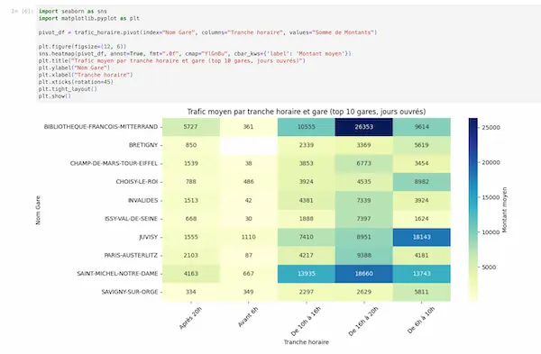

Data analysis
Data exploration and visualization with Python (pandas, seaborn): identified the busiest train stations on working days over the last 6 months using a provided CSV file.
I transform complex business problems into effective tools and processes. From strategy to deployment, I lead projects that have a real impact.
Discover my projectsMy journey has taught me one essential thing: I enjoy understanding complex systems to make them simpler and more efficient. Whether it's leading the in-house transition of a payroll service, building a training center from scratch, or developing a business application, my motivation remains the same: to turn a need into a concrete and functional solution.
With a dual skill set in project management and technical development (Python, SQL, PHP), I am able to communicate effectively with both management and production teams. I don't just deliver a project; I ensure it is adopted, used, and provides measurable value.
Today, I am looking to apply this vision to ambitious transformation projects.

An internal application, based on a personal project, designed to simplify and streamline business communications at SNCF.

Platform for presenting and consulting the sports association's activities and for registration.

Design, development, and integration of a responsive one-page showcase website in WordPress.

Design and integration of a specialized WordPress website for a training center with an integrated catalog.

Design, development, and integration of a responsive WordPress showcase website for a private security company.

Redesign, development, and integration of a responsive WordPress showcase website with a custom theme.

Design, development, and integration of a responsive WordPress showcase website with a custom theme.

Creation of a private occupational health and safety training center. Creation of documents, website, and software configuration. Development of training programs. Obtaining certifications and accreditations (Qualiopi, AFNOR).
Internalization of payroll and migration of employee files to MADPER (Tetra Informatique): management of payroll variables, production of pay slips, social security declarations, invoicing, and customization of processing.
Would you like to collaborate, recommend me, or learn more about my projects? Do not hesitate to contact me via or .